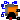

This package provides squirrel cage and slip ring induction machine models.
| Name | Description |
|---|---|
| AIM_SquirrelCage | Asynchronous induction machine with squirrel cage |
|  AIM_SlipRing | Asynchronous induction machine with slip ring rotor |
Resistances and stray inductances of the machine refer to an m phase stator. The symmetry of the stator and rotor is assumed. The machine models take the following loss effects into account:
| Name | Description |
|---|---|
| m | Number of stator phases |
| Jr | Rotor inertia [kg.m2] |
| useSupport | Enable / disable (=fixed stator) support |
| Js | Stator inertia [kg.m2] |
| useThermalPort | Enable / disable (=fixed temperatures) thermal port |
| p | Number of pole pairs (Integer) |
| fsNominal | Nominal frequency [Hz] |
| effectiveStatorTurns | Effective number of stator turns |
| Operational temperatures | |
| TsOperational | Operational temperature of stator resistance [K] |
| TrOperational | Operational temperature of rotor resistance [K] |
| Initialization | |
| phiMechanical | Mechanical angle of rotor against stator [rad] |
| wMechanical | Mechanical angular velocity of rotor against stator [rad/s] |
| Nominal resistances and inductances | |
| TsRef | Reference temperature of stator resistance [K] |
| alpha20s | Temperature coefficient of stator resistance at 20 degC [1/K] |
| Lszero | Stator zero inductance [H] |
| Lm | Stator main field inductance [H] |
| Lrsigma | Rotor leakage inductance of equivalent m phase winding w.r.t. stator side [H] |
| Rr | Rotor resistance of equivalent m phase winding w.r.t. stator side [Ohm] |
| TrRef | Reference temperature of rotor resistance [K] |
| alpha20r | Temperature coefficient of rotor resistance at 20 degC [1/K] |
| Losses | |
| frictionParameters | Friction losses |
| statorCoreParameters | Stator core losses; all parameters refer to stator side |
| strayLoadParameters | Stray load losses |
| Name | Description |
|---|---|
| flange | Shaft |
| support | Support at which the reaction torque is acting |
| plug_sp | Positive plug of stator |
| plug_sn | Negative plug of stator |
Resistances and stray inductances of the machine always refer to either stator or rotor. The symmetry of the stator and rotor is assumed. The number of stator and rotor phases may be different. The machine models take the following loss effects into account:
| Name | Description |
|---|---|
| mr | Number of rotor phases |
| m | Number of stator phases |
| Jr | Rotor inertia [kg.m2] |
| useSupport | Enable / disable (=fixed stator) support |
| Js | Stator inertia [kg.m2] |
| useThermalPort | Enable / disable (=fixed temperatures) thermal port |
| p | Number of pole pairs (Integer) |
| fsNominal | Nominal frequency [Hz] |
| effectiveStatorTurns | Effective number of stator turns |
| useTurnsRatio | Use TurnsRatio or calculate from locked-rotor voltage? |
| TurnsRatio | Effective number of stator turns / effective number of rotor turns |
| VsNominal | Nominal stator voltage per phase [V] |
| VrLockedRotor | Locked rotor voltage per phase [V] |
| Operational temperatures | |
| TsOperational | Operational temperature of stator resistance [K] |
| TrOperational | Operational temperature of rotor resistance [K] |
| Initialization | |
| phiMechanical | Mechanical angle of rotor against stator [rad] |
| wMechanical | Mechanical angular velocity of rotor against stator [rad/s] |
| Nominal resistances and inductances | |
| TsRef | Reference temperature of stator resistance [K] |
| alpha20s | Temperature coefficient of stator resistance at 20 degC [1/K] |
| Lszero | Stator zero inductance [H] |
| Lm | Stator main field inductance [H] |
| Lrsigma | Rotor leakage inductance w.r.t. rotor side [H] |
| Lrzero | Rotor zero inductance w.r.t. rotor side [H] |
| Rr | Rotor resistance per phase w.r.t. rotor side [Ohm] |
| TrRef | Reference temperature of rotor resistance [K] |
| alpha20r | Temperature coefficient of rotor resistance at 20 degC [1/K] |
| Losses | |
| frictionParameters | Friction losses |
| statorCoreParameters | Stator core losses; all parameters refer to stator side |
| strayLoadParameters | Stray load losses |
| rotorCoreParameters | Rotor core losses, all quantities refer to rotor side |
| Name | Description |
|---|---|
| flange | Shaft |
| support | Support at which the reaction torque is acting |
| plug_sp | Positive plug of stator |
| plug_sn | Negative plug of stator |
| plug_rn | Negative plug of rotor |
| plug_rp | Positive plug of rotor |